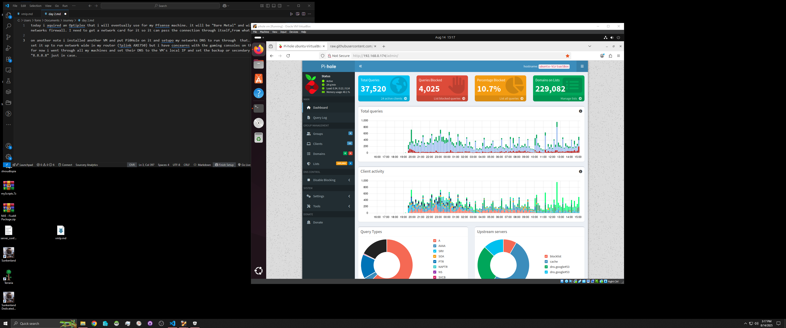
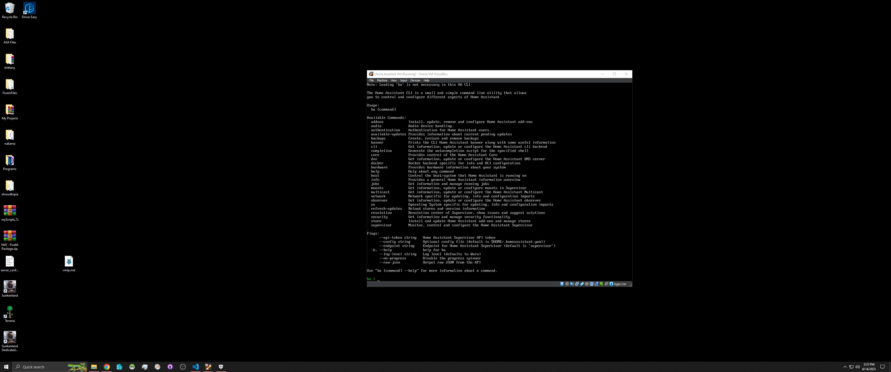
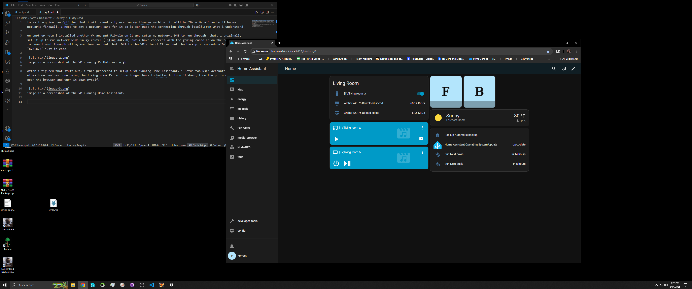

Today I acquired an Optiplex that I will eventually use for my pfSense machine. It will run "Bare Metal" and act as my network’s firewall. I need to get a network card for it so it can pass the connection through itself, from what I understand.
On another note, I installed another VM and set up Pi-Hole to manage my network’s DNS. I originally configured it to run network-wide through my router (TP-Link AXE750), but I have concerns about the gaming consoles on the network. For now, I set the DNS on all my machines to the VM’s local IP and configured the secondary DNS as Google’s 8.8.8.8 just in case.
 Screenshot of the VM running Pi-Hole overnight.After I figured that out, I set up a VM running Home Assistant. I created two user accounts and added a few of my home devices, including the living room TV. Now I no longer have to shout to turn it down from the PC, I can just open the browser and control it myself.
 Screenshot of the VM running Home Assistant.I continued working and assigned both VMs their own IP addresses. I even successfully pinged each one from the other.
 Screenshot of the Web UI for Home Assistant.